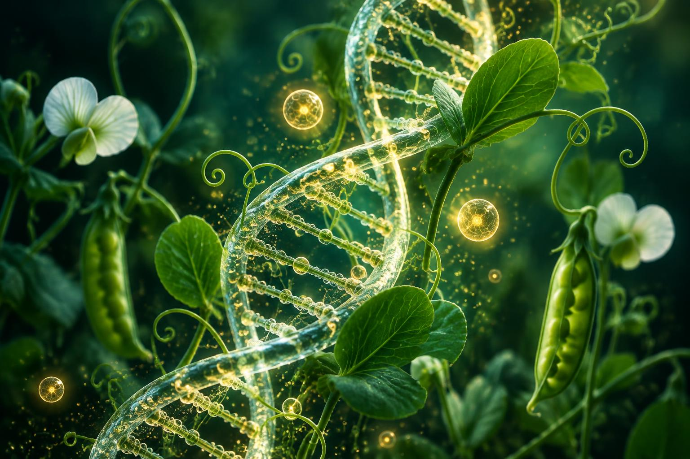
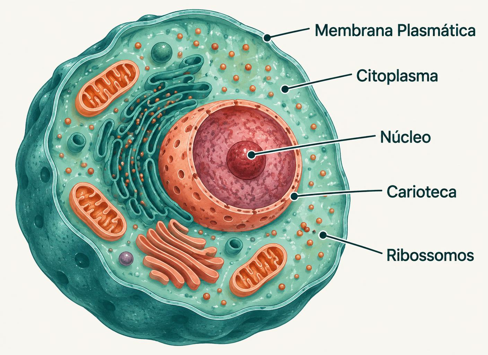
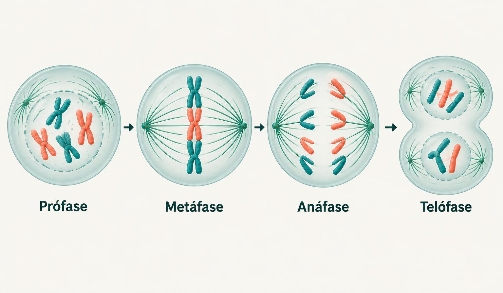
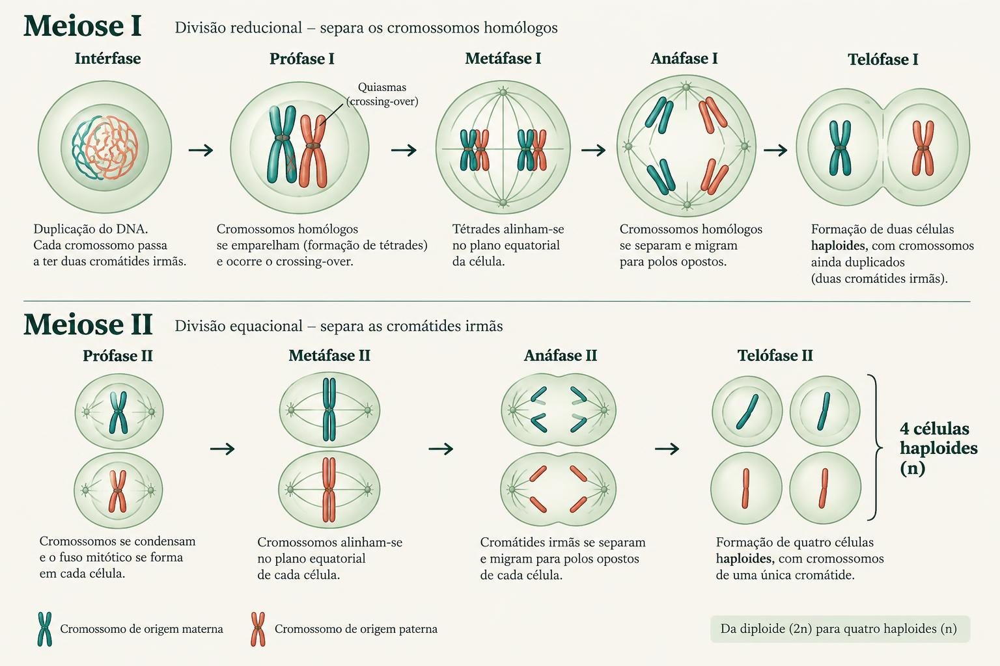
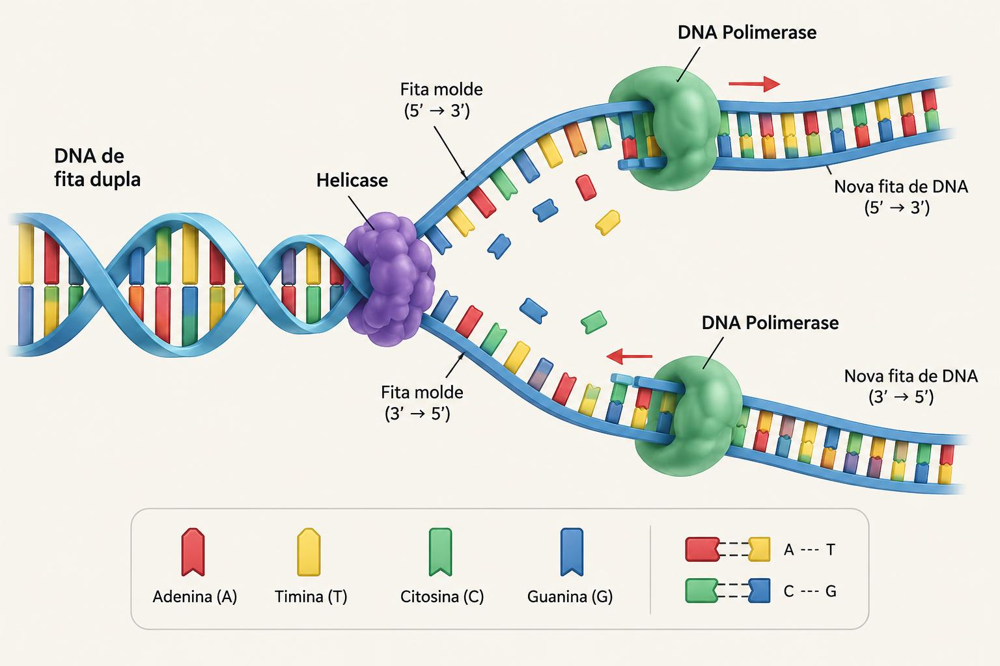

Membrana Plasmática
Película lipoproteica flexível que envolve toda a célula, protegendo seu interior e controlando seletivamente a entrada de nutrientes e a saída de resíduos.

Da arquitetura silenciosa da célula às leis que explicam a cor dos olhos, a duplicação do DNA e os caminhos que moldam quem nos tornamos.
O Fio Invisível das Gerações
Hereditariedade é o fenômeno biológico pelo qual as características genéticas de pais e ancestrais são transmitidas aos descendentes ao longo das gerações. Essa herança viaja codificada nas moléculas de DNA presentes nos gametas (óvulo e espermatozoide) e determina desde traços visíveis — como tipo sanguíneo, formato do cabelo e cor dos olhos — até predisposições metabólicas e características celulares invisíveis a olho nu.
Os fundamentos científicos dessa transmissão foram desvendados no século XIX pelo monge austríaco Gregor Mendel, que cultivou quase 30 mil pés de ervilha no jardim de seu mosteiro. Ao cruzar plantas altas e baixas, sementes lisas e rugosas, Mendel percebeu que as características não se misturavam como tintas, mas eram herdadas como unidades discretas — que hoje chamamos de genes.
Arquitetura Microscópica
Toda a história da hereditariedade acontece dentro da unidade fundamental da vida: a célula. Conheça as cinco estruturas essenciais que protegem, organizam e colocam em prática as instruções do nosso código genético.

Película lipoproteica flexível que envolve toda a célula, protegendo seu interior e controlando seletivamente a entrada de nutrientes e a saída de resíduos.
Região gelatinosa entre a membrana e o núcleo, preenchida pelo citosol, onde ficam mergulhadas as organelas e ocorrem reações metabólicas vitais.
Centro de comando da célula eucarionte. Abriga o DNA organizado em cromossomos e coordena o crescimento, o metabolismo e a reprodução celular.
Envoltório nuclear de membrana dupla repleto de poros que separa o núcleo do citoplasma, protegendo o material genético e regulando a troca de moléculas.
Pequenas fábricas celulares (livres no citoplasma ou aderidas ao retículo) responsáveis por ler o código genético trazido pelo RNA e sintetizar proteínas.
Biblioteca Compacta
Um cromossomo é uma longa molécula de DNA altamente condensada e enrolada em proteínas chamadas histonas, formando estruturas em bastão (ou em formato de “X” quando duplicados).
Onde está localizado? Nas células eucariontes, os cromossomos ficam guardados dentro do núcleo celular. Cada célula somática humana possui 46 cromossomos organizados em 23 pares — 22 pares autossômicos e 1 par sexual (XX na mulher, XY no homem).
A Receita Biológica
Um gene é um segmento específico da molécula de DNA que contém as instruções codificadas para produzir uma proteína ou uma molécula funcional de RNA — funcionando como uma “receita” para determinada característica.
Onde é encontrado? Os genes são encontrados em posições fixas (loci) ao longo dos cromossomos, dentro do núcleo das células (e uma pequena fração nas mitocôndrias). O genoma humano possui cerca de 20 mil genes codificadores de proteínas.
Genética Mendeliana na Prática
Um alelo é cada uma das formas alternativas de um mesmo gene que ocupam a mesma posição em cromossomos homólogos — um herdado da mãe e outro do pai. A combinação desses dois alelos define o genótipo e influencia o fenótipo.
Alelo Dominante (ex.: A ou T): manifesta sua
característica mesmo quando aparece em apenas uma cópia (tanto em TT quanto em
Tt).
Alelo Recessivo (ex.: a ou t): só
se expressa no fenótipo quando o indivíduo herda duas cópias dele — uma do pai e outra da mãe
(tt).
Linha capilar em formato de “V” no centro da testa.
Lóbulo pendurado livremente (lóbulo preso é recessivo).
Pequenas depressões visíveis ao sorrir.
Capacidade de dobrar as bordas laterais da língua em “U”.
Fenda ou covinha central na ponta do queixo.
Classificada como recessiva na genética clássica (também influenciada por hábitos visuais).
Classificado como recessivo na genética mendeliana clássica (destro = dominante).
Considerando T (dominante, alto) e t (recessivo, baixo):
| × | t | t |
|---|---|---|
| T | Tt | Tt |
| T | Tt | Tt |
Genótipo: 100%
Tt
Fenótipo: 100% Altos
| × | T | t |
|---|---|---|
| T | TT | Tt |
| t | Tt | tt |
Genótipo: 25% TT • 50% Tt • 25%
tt (1:2:1)
Fenótipo: 75% Altos • 25% Baixos (3:1)
| × | t | t |
|---|---|---|
| T | Tt | Tt |
| t | tt | tt |
Genótipo: 50% Tt • 50% tt
(1:1)
Fenótipo: 50% Altos • 50% Baixos (1:1)
Divisão Celular Equacional
A mitose é a divisão celular em que uma célula-mãe diploide (2n) origina duas células-filhas geneticamente idênticas (2n). Sua função é garantir o crescimento do organismo, a renovação dos tecidos e a cicatrização de ferimentos.
Como o DNA é copiado no cromossomo? Antes da mitose, na fase S da intérfase, a dupla-hélice de DNA se abre e cada fita serve de molde para sintetizar uma fita complementar, formando duas cromátides-irmãs idênticas unidas pelo centrômero, que serão separadas na anáfase.

Cromossomos se condensam, a carioteca se desfaz e as fibras do fuso se formam.
Cromossomos atingem condensação máxima e se alinham no plano equatorial da célula.
As cromátides-irmãs se separam e migram para polos opostos da célula.
Duas novas cariotecas se reconstroem e o citoplasma se divide formando duas células idênticas.
Divisão Celular Reducional
A meiose ocorre nas células germinativas para produzir os gametas (óvulos e espermatozoides). A partir de uma célula diploide (2n), ela passa por duas divisões sucessivas (Meiose I e Meiose II) e gera quatro células-filhas geneticamente diferentes.

Não! Elas tornam-se haploides (n), com metade do número de cromossomos (23 nos humanos), pois o DNA se duplica uma única vez antes de duas divisões seguidas. Isso permite que na fecundação (n + n = 2n) o número diploide da espécie (46) seja restaurado.
| Critério | Mitose | Meiose |
|---|---|---|
| Células formadas | 2 células-filhas | 4 células-filhas |
| Cromossomos | Mantém diploide (2n = 46) | Reduz para haploide (n = 23) |
| Identidade genética | Idênticas à célula-mãe | Diferentes (crossing-over) |
| Divisões | 1 divisão celular | 2 divisões sucessivas (I e II) |
| Função principal | Crescimento, regeneração e cicatrização | Formação de gametas |
O Alfabeto de Quatro Letras
Os nucleotídeos envolvidos na replicação do DNA são compostos por fosfato, desoxirribose e uma das quatro bases nitrogenadas: Adenina (A), Timina (T), Citosina (C) e Guanina (G).

Quando uma Letra Muda
Mutação é uma alteração permanente na sequência de nucleotídeos do DNA (substituição, inserção ou deleção). Pode ocorrer espontaneamente ou por radiação e agentes químicos. Veja no modelo abaixo como a troca de uma única base altera o código genético:
Sequência Original Normal
O códon GAG produz Ácido Glutâmico → hemoglobina normal.
Sequência com Mutação Pontual
A troca T → A
muda o códon para GTG (Valina), causando a Anemia Falciforme.
Saúde e Genética Clínica
Trissomia do cromossomo 21
Presença de uma cópia extra do cromossomo 21. Manifesta-se por hipotonia muscular, traços faciais característicos, desenvolvimento cognitivo em ritmo próprio e maior predisposição a cardiopatias congênitas.
Mutação pontual recessiva (beta-globina)
Os glóbulos vermelhos assumem formato de foice, dificultando a circulação nos pequenos vasos. Provoca anemia crônica, fadiga, crises de dor e maior risco de infecções.
Herança autossômica recessiva (gene CFTR)
Produção de muco espesso que se acumula nos pulmões e no pâncreas, causando tosse crônica, infecções respiratórias recorrentes e dificuldade na absorção de nutrientes.
Distúrbio recessivo ligado ao cromossomo X
Deficiência nos fatores de coagulação (VIII ou IX), provocando sangramentos prolongados após pequenos cortes, hematomas frequentes e hemorragias articulares.
Natureza, Ambiente e Escolha
Definitivamente não. Embora o DNA forneça o projeto inicial do corpo, nossas características físicas, mentais, sociais e espirituais resultam da interação entre hereditariedade, ambiente e escolhas pessoais.
Alimentação equilibrada, exercícios, sono reparador, água pura e cuidados preventivos.
Educação, leitura, estímulos intelectuais, gestão emocional e escolhas conscientes.
Família, amizades saudáveis, cultura, comunidade e serviço ao próximo.
Fé, comunhão diária com Deus, estudo bíblico, oração e cultivo de valores eternos.
Reflexão e Propósito
“Pois tu formaste o meu interior, tu me teceste no seio de minha mãe. Graças te dou, visto que por modo assombrosamente maravilhoso me formaste; as tuas obras são admiráveis, e a minha alma o sabe muito bem.”
“Ensina a criança no caminho em que deve andar, e, ainda quando for velho, não se desviará dele.”
“E não vos conformeis com este século, mas transformai-vos pela renovação da vossa mente, para que experimenteis qual seja a boa, agradável e perfeita vontade de Deus.”
“Os hábitos de vida, o domínio próprio e a entrega da vontade a Deus exercem influência mais profunda sobre o caráter do que qualquer tendência herdada.”